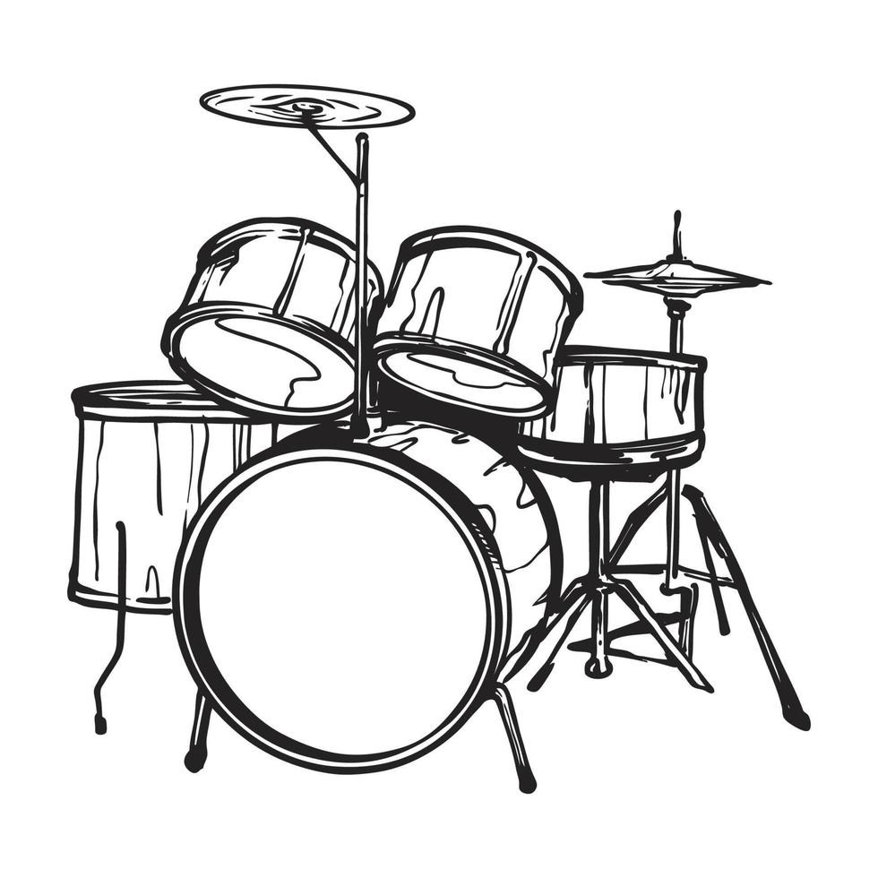

Os primeiros instrumentos de percussão surgiram de forma rudimentar, com o uso de troncos ocos, pedras e peles de animais. Esses sons eram utilizados em rituais, formas de comunicação e celebrações coletivas.
Conheça a Bateria
Toque nos marcadores da imagem para identificar algumas das principais peças de um kit de bateria.

ﾠ
Linha do Tempo
Alguns marcos importantes que ajudam a entender a evolução da bateria desde as primeiras formas de percussão até a era digital.
Povos como egípcios e mesopotâmicos já utilizavam tambores em cerimônias religiosas, contextos militares e manifestações culturais, consolidando a importância da percussão na vida social.
A mistura de tradições africanas, europeias e de bandas militares contribuiu para a formação de uma base rítmica rica, essencial para o surgimento da bateria moderna.
Diferentes instrumentos de percussão passaram a ser reunidos em um único conjunto. O desenvolvimento do pedal de bumbo, aperfeiçoado por William F. Ludwig em 1910, foi decisivo para que um único músico pudesse tocar várias peças ao mesmo tempo.
A bateria tornou-se fundamental nas formações de jazz. O baterista passou a ter papel mais criativo, explorando swing, improvisação e novas possibilidades de acompanhamento rítmico.
O kit ganhou novas configurações e maior versatilidade. O chimbal consolidou-se como parte importante do conjunto, ampliando a expressividade e o controle dinâmico do instrumentista.
Com a ascensão do rock, a bateria ganhou protagonismo. Batidas mais fortes, viradas marcantes e maior presença de palco fizeram do baterista uma figura central em muitas bandas.
A popularização dos kits eletrônicos trouxe novos timbres e integração com sintetizadores e equipamentos digitais, ampliando bastante as possibilidades sonoras do instrumento.
Softwares, pads, gravação em casa e ensino online transformaram a maneira de aprender, tocar e produzir música com bateria, aproximando o instrumento do universo digital contemporâneo.
Grandes Nomes
Alguns bateristas que marcaram a história da música.

Karen Carpenter
The Carpenters • PopReconhecida por sua musicalidade, precisão e sensibilidade ao tocar.
Antes de se consolidar como cantora, destacou-se como baterista no início da carreira.
Biografia
Maureen Tucker
The Velvet Underground • AlternativoConhecida por um estilo minimalista, direto e pouco convencional.
Seu modo de tocar influenciou o rock alternativo e experimental.
Biografia
Cindy Blackman
Jazz / RockDestaca-se pela versatilidade e pelo domínio técnico em diferentes contextos musicais.
Construiu carreira sólida no jazz e no rock, com forte presença em performances ao vivo.
Biografia
Anika Nilles
Fusion / Modern DrummingConhecida por sua independência rítmica, linguagem moderna e grande precisão.
Ganhou projeção internacional com vídeos na internet e também atua como compositora e educadora.
BiografiaLilian Carmona
Brasil • MPB/JazzÉ uma referência brasileira no ensino da bateria e na formação de novos instrumentistas.
Também se destaca pela valorização da presença feminina na música instrumental.
BiografiaVera Figueiredo
Brasil • Música BrasileiraÉ um dos nomes mais importantes da bateria no Brasil.
Seu trabalho é reconhecido pela técnica, musicalidade e atuação em contexto nacional e internacional.
Biografia
Eloy Casagrande
Slipknot / Sepultura • MetalReconhecido mundialmente por sua técnica extrema, velocidade e precisão.
Ganhou destaque no Sepultura e atualmente integra o Slipknot.
Biografia
John Bonham
Led Zeppelin • RockÉ lembrado como um dos maiores bateristas da história do rock, pela potência, pegada e groove.
Sua forma de tocar influenciou gerações e ajudou a redefinir o papel da bateria no rock pesado.
Biografia
Neil Peart
Rush • Rock ProgressivoFicou conhecido pela técnica avançada, precisão e composições rítmicas complexas.
É uma das maiores referências da bateria no rock progressivo.
Biografia
Travis Barker
Blink-182 • Punk RockDestaca-se pela velocidade, precisão e grande versatilidade.
Contribuiu para ampliar a presença da bateria em diferentes estilos da música contemporânea.
Biografia
Phil Collins
Genesis • Rock/PopÉ reconhecido tanto como cantor quanto como baterista de grande musicalidade.
Seu trabalho no Genesis e na carreira solo marcou o pop e o rock, inclusive pelo uso de timbres muito característicos de bateria nos anos 1980.
Biografia
Mick Fleetwood
Fleetwood Mac • RockConhecido por sua musicalidade, consistência rítmica e presença de palco.
Seu estilo ajudou a definir o som do Fleetwood Mac e influenciou o rock e o pop.
Biografia
Dave Grohl
Nirvana • Rock/GrungeÉ conhecido por um estilo forte, energético e muito marcante.
Seu trabalho como baterista no Nirvana o tornou uma referência importante do rock dos anos 1990.
Biografia
Buddy Rich
JazzÉ considerado um dos maiores bateristas de todos os tempos.
Ficou famoso por sua técnica impressionante, velocidade e capacidade de improvisação.
Biografia
Ringo Starr
The Beatles • RockÉ lembrado pela simplicidade, musicalidade e senso de arranjo.
Seu estilo mostra como a bateria pode servir à canção com eficiência e personalidade.
Biografia